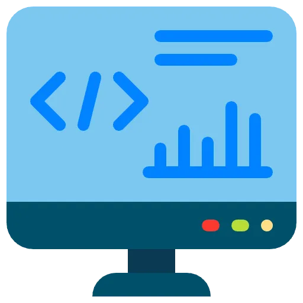
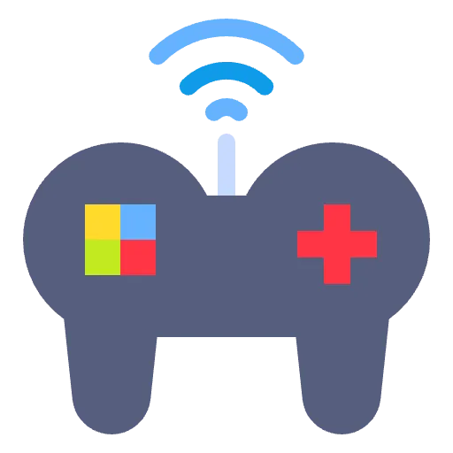

AKI SHIBATA
SHIBATA AKI
PORTFOLIO
ポートフォリオ
自分が開発したゲームやプログラムを披露する
ためのポートフォリオです。
ご連絡はSNSかメールにてお願いします。
This is my portolio show casing various different
projects I have worked on.
feel free to contact me via my details at the
bottom.
作品
WORKS
スカイラナー:
C++, OpenGL, VisualStudio
自作のオブジェクトローダーでBlender製3Dモデルを読み込み、オブジェクトプーリングにより生成・破棄を減し、パフォーマンスを向上させた エンドレスラナーです
Sky Runner:
C++, OpenGL, VisualStudio
An endless runner game featuring 3D assets modeled in Blender and imported using a custom object loader. Implemented object pooling to optimize performance by minimizing object creation and destruction overhead.
ダンジョン４:
UnrealEngine 4, C++
ダンジョン内のモンスターを倒して最後まで進むゲームのデモ
Dungeon 4:
UnrealEngine 4, C++
A level of of a dungeon crawler style game where the player has to defeat all the monsters and then reach the end.
AI車の自動起動デモ:
C++, VisualStudio
状態マシンを利用して車にいろんな目的を目指して動かせるプログラムとAスター探索のデモ。
Ai Car behaviour demo:
C++, VisualStudio
A demo of different steering behaviours using a state machine and demonstration of A* Pathfinding
コイン勇者:
C++, VisualStudio
パクマンみたいなゲームを大学のフレームワークを作ったもの
Coin Hero:
C++, VisualStudio
A pacman style game using the university framework
チャットルーム:
C#, WPF, .NETFramework
ローカルサーバーでチャットルームを作り、ユーザー同士で公開と非公開の会話も可能。サーバーを通して 他のユーザーとじゃんけんを遊べるのも可能。
Chat Room:
C#, WPF, .NETFramework
A chat room hosted locally allowing user to sent public and private messages to each other. Users are also able to play rock paper scissors with each other.
SKILL
スキル

プログラム言語：C++, C#, Python
Programming languages: C++, C#, Python
大学では基本的にC++とC#を学びゲーム開発のために使っていた言語です。Pythonは高校で学び個人プロジェクトで も使っています。
I used C++ and C# throughout my time at university for game development and learned python while I was at high school and one of my personal projects.

ゲームエンジン：Unreal, Unity
Game Engines: Unreal, Unity
UnityとUnreal Engineは主に大学で開発したゲームで使っていました。Unrealでは ゲームで使うロジックは大体C++でプログラムしそのスクリプトをBlueprintで実行する 方針で使っていました。
My experience with Unity and Unreal Engine was while I was at university. With Unreal I built my foundations using C++ and implemented my C++ code via Unreal's blueprints.
APIとフレームワーク：OpenGL, SDL, WPF
APIs and Frameworks: OpenGL, Vulkan, WPF
OpenGLとWPFはSky Runnerとチャットルームのプロジェクトで使っていますが、Vulkanは現在開発中の プロジェクトで使っています。目的はまずPONGを作りそこから2Dゲーム開発のためのフレームワークを作ることです。
I gained my skills in OpenGL and WPF via the endless runner project and chat room projects. I am currently working on a vulkan project to create PONG then turn it into a framework for making 2D games.

Linux
現在使っているパソコンのOSはArch LinuxでHyprlandというデスクトップ環境を使っています。 他にはFedoraとLinux Mintも使ったことはあります。
My current PC uses Arch Linux with the Hyprland desktop environment. I have also used Fedora and Linux Mint in the past.
ABOUT
プロフィール
子供の頃からゲームが大好きだったが高校に入ってプログラミングを勉強し、ゲーム開発に興味を持ちました。大学ではゲーム開発部門があることを知り イギリスのスタフォード大学でゲーム開発部門に入りました。大学ではC++とC#をゲーム開発の為に学びUnityとUnreal Engineのゲームエンジンも学び 卒業しました。卒業ごはPythonでデータベースを作りそれを下にデータをグラフで表記する個人プロジェクトを作り、現在はVulkanでPONGを作り、 更にこれをゲームを開発するための２Dフレームワーク変える個人プロジェクトを進めています。
I have always enjoyed playing games since I was a child but after learning to code in high school it inspired me to want to not just be on the playing side but the creating side. From this I decied to undertake a Bachelors Degree at the University of Staffordshire in the Computer Games Development course. Here I learned about the available tools for me such as game engines such as Unity and Unreal Engine as well as the C++ and C# programming languages. Since graduating I have worked on a couple projects one using Python to create a database to enable the querying of data to produce a pie chart based on that data and now am currently working on trying to make a 2D framework for making games using Vulkan.